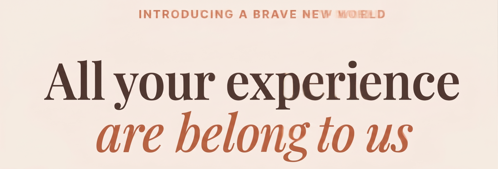

The Machine Talks Back, The Human Never Talks Back
"the machine yes the machine never wastes anybody's time never watches the foreman never talks back" --Carl Sandburg
I recently learned about the Poetry Camera. I have very mixed feelings about it! I want to diagnose why I find this thing, which is ultimately just a cool toy, so... fraught.
Initially, I didn't have any problems with it. My first reaction was: this thing is really awesome! I wish I built this. I've been actively searching for hardware project ideas; this would've been perfect. And the product itself is really well-executed. As tech, it's wonderful.
The problem is that it's not just tech. It's part of a broader context. It fits neatly into a widespread pattern of people choosing to substitute technology for fundamental human experiences. What could be more human than the useless activity of writing a poem? Why would anyone want to automate it?
The newest wave of automation feels different from the past. Technologies like writing and calculators obsolesced specific skills, but they didn't blur boundaries between humans and tools. They didn't precipitate a profound identity crisis. Either you calculated something in your head, or you used a calculator. There's zero chance of confusing the machine's arithmetic capacities for your own. A calculator doesn't give you the illusion of capability, and it denies you authorship over the experience of computing a result. At the heart of the poetry camera is a technology that does blur those boundaries, and that people do use to convincingly claim ownership of experiences they've never had and outputs they didn't actually produce.
I've heard defenses of the camera. They point out that the value of the camera isn't the mediocre poetry it prints out, but the interactions it creates. You approach a stranger and offer to take a "poem" of them. They get a copy of the poem, and you both get a strange encounter that, if not for the camera, would never have happened. Maybe it sparks a conversation, forms a friendship, or just creates a small, shared moment that two people feel good about. That all feels really worthwhile.
But the camera can do other things, too. It can substitute for seeing, thinking, and communicating. Instead of observing a scene, formulating a thought, and framing it in poetry, you point and click, producing the artifact, the evidence, of thought. But you didn't actually think. You still experienced something: it feels like you engaged. But when a statistical distribution produces, processes, and interprets your experiences for you, where are you in those experiences? To what extent are they still yours?

"Cognition as a service" seems to produce this really weird kind of internal epistemic collapse. It's hard to know yourself when a device generates self-defining experiences for you. If you're defined by your actions, and a substantial portion of your actions are AI-generated-- who are you? For example, it would be weird to claim that you personally can move at 100 miles an hour because you drove a car at that speed. But people who drive agents often say things like "I made an entire app in 20 minutes." You can say the words "I made it"-- "I did it"-- but they're not true. The truth is much weirder: some weird man-machine-you-claude-symbiote did it. Not you.
The loss is easy to ignore. The UX of agentic programming is identical to "artisanal free-range code" production. You're sitting in a chair, looking at a screen, typing text into a terminal. The product design obscures the exchange of agency and ability that's the core cost of using these tools. The tool has agency only because you gave it yours. The owner's dividend is your dispossession. And you're willingly paying for the loss.
It's all too easy not to notice the slip from pilot to passenger. It definitely happens to me. I use claude, mainly through the browser chat, for all kinds of nontechnical things-- talking about Warhammer 40k, home security systems, cycling gear, books I'm reading-- and technical things, mostly as a drop-in replacement for Stack Overflow or Google. Mentally, I maintain a null-intersection Venn diagram of "claudable" and "non-claudable" tasks. But it can be really tempting to save time by expanding the class of "claudable" tasks.
Carelessness carries serious costs. I remember talking to claude while trying to learn some math theorem. In the end, I didn't really learn it. I didn't struggle to prove it, internalize it, solve problems using it. I just read claude's explanation. You might say this isn't that different from nodding along to a textbook or a 3Blue1Brown episode: if you don't actively work, you won't learn. But reading and watching are obviously passive: in both cases, you're unidirectionally receiving content. Talking to a chatbot feels like participation: it's passivity presented as activity, direction disguised as dialogue. The cost of carelessness is not noticing that the two-way channel is really one-way, and that it leads you inexorably to a regression from protagonist to NPC in your own life. That's what happened to me with that theorem.
Consumption isn't participation in life. It doesn't really matter what the tech is. It can't make you see more beauty in a sunset or more love in your partner's eyes. And really, would you want a tool to do that? Probably not. Some things are too valuable to automate.
For most people, including me, rejecting or escaping automation isn't an option, or even desirable. That leaves it up to each person to negotiate the terms of their participation. Having any negotiating power is a product of privilege, but for those lucky enough to be able to ask it, I think the question is: "What do I consider so valuable that I would never want to outsource it to a machine?"